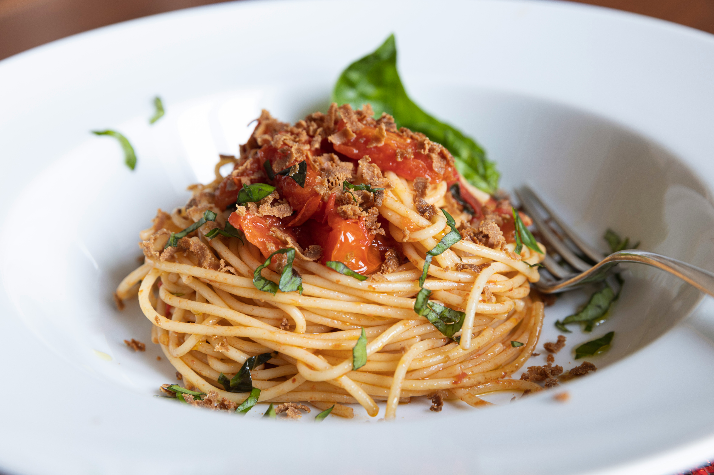

Sphagetti

Description
Long, round noodles covered in tomato based sauce and topped with basil. Can also have meat ontop, in the form of ground beef or meatballs
Ingredients
- Sphagetti Noodles
- Tomato or Bolognaise sauce
- OPTIONAL: Ground Beef
- OPTIONAL: Basil
Steps
- Boil the noodles until al dente Meaning, the noodles should be very slightly under done
- While noodles are boiling, begin to heat the sauce
- Begin to brown the meat, if you decide to use any
- After the noodles are cooked, the sauce is hot, and the meat is done you can either serve them mixed together or separetly